遊びで植物を育てよう
2023/08/14
グミの鉢植えは止めます。
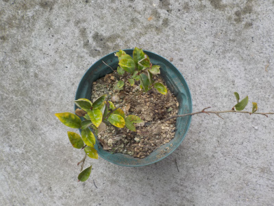
私の育て方が悪いせいですが、大きくなっていません。
たぶん私には合わないんでしょう。寒くなったら地植えにしようと思います。
【グミTOP】
【果物TOP】
【園芸TOP】
2023/04/09
鉢植えのグミが開花しました。

あまり背が伸びていない鉢植えのグミですが、ちゃんと開花しました。
今年は大きく成長するといいんですが。
【グミTOP】
【果物TOP】
【園芸TOP】
2022/06/04
グミがあまり成長してないです。
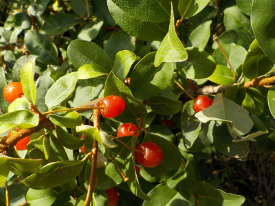
グミが赤くなったので食べてみました。
まずかったです。まだ完熟じゃないですね。
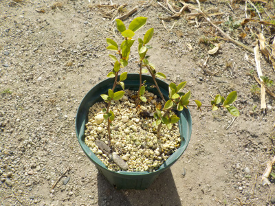
挿し木のグミは何故かあまり成長していません。
日当たりが良すぎて水不足かな？ちょっと日差しの弱い場所に移動して育てようと思います。
【グミTOP】
【果物TOP】
【園芸TOP】
2022/04/02
挿し木のグミを植替えしました。
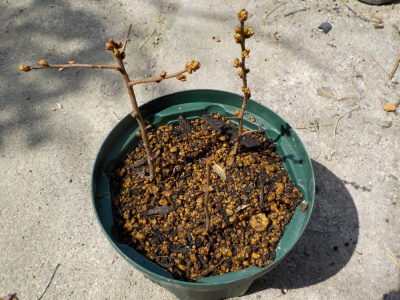
挿し木のグミを鉢に植替えしました。
1本は土と同化してて見えにくいですが3本あります。
もうすぐ芽が出そうですね。
【グミTOP】 【果物TOP】 【園芸TOP】
2021/07/31
グミの挿し木が2本枯れたので、2本追加しました。
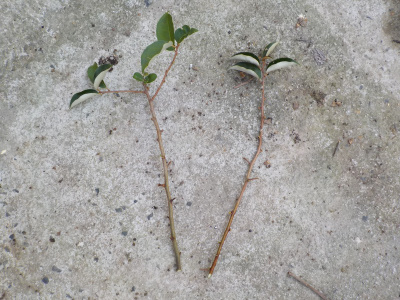
挿し木して20日経ちましたが、グミが2本枯れました。
なので2本追加で挿し木しました。
生き残った1本は挿し木に成功している気がしますが、念のためです。
【グミTOP】 【果物TOP】 【園芸TOP】
2021/07/11
グミの挿し木をしました。
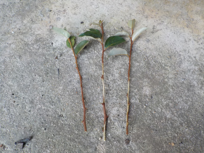
以前は大きく育ったグミの木があったんですが、邪魔なので切ってしまいました。
種が落ちで育ったものが庭の隅にあったので、3本切って挿し木しました。
実が出来たところであんまり食べないですが、子供の時に食べてた感じが懐かしいので好きです。
大きくなると邪魔になるので鉢植えにしたいですが、挿し木が成功するかな？
【グミTOP】 【果物TOP】 【園芸TOP】
2017/05/27
グミの実が色づきだしました。
もう1週間くらいしたら食べごろかな。
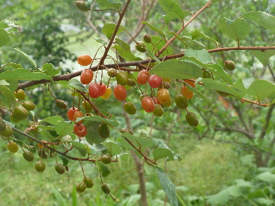
グリーンが背景ののどかな写真が撮れました。
奥行きがあるのっていいですね。
【グミTOP】 【果物TOP】 【園芸TOP】
2017/06/17
グミの実は今がピークかな。
沢山実ってます。
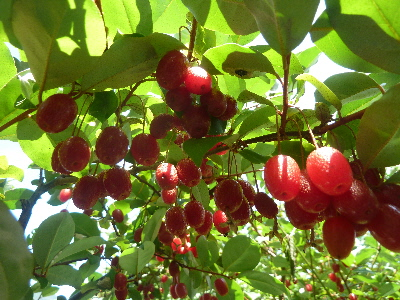
ちょっと食べたら甘くて美味しかったです。
大量にとってジャムにしようかとも思いましたが、面倒なのでやめました。
【グミTOP】 【果物TOP】 【園芸TOP】
2015/05/31
久しぶりに食べたら意外と美味しかった。
グミはまずいイメージがあったんですが、
今日食べたら、意外と美味しかった。
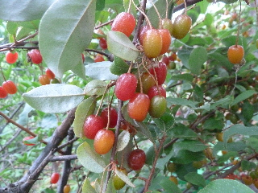
味覚が変わったのかな。
今年は特別美味しいのかな？
沢山はいらないけど、ちょっとずつだったら美味しく食べれました。
【グミTOP】 【果物TOP】 【園芸TOP】
2014/04/18
グミの花に、蜂がいっぱいいました。
私にはわからないですが、グミの花っていい香りがするんでしょうか？
花に蜂が何匹も寄って来ていました。
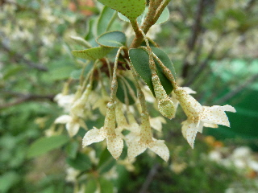
蜂は動き回っているため、写真に撮ることは出来ませんでした。
【グミTOP】 【果物TOP】 【園芸TOP】
2014/09/28
カマキリの卵だ。
グミの木にカマキリの卵が産みつけてありました。
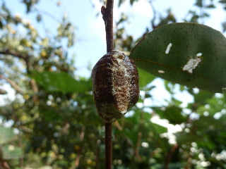
秋ですね。
これからだんだん虫が減っていくんだな。
【グミTOP】 【果物TOP】 【園芸TOP】
2014/06/15
グミ好き発見。
今年もグミの実が出来ました。
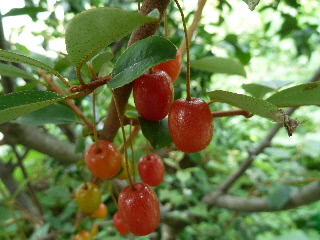
エグみがあるのであんまり食べません。
でも今日食べたら、思ってたよりも美味しかったです。
今年はいつもより甘いかも。
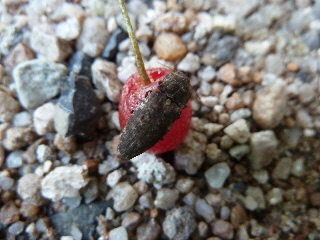
グミにも害虫がいるんですね。
コメツキムシが何匹もくっついていました。
虫に果汁を吸われて、ちょっとシワシワです。
【グミTOP】 【果物TOP】 【園芸TOP】
2013/06/11
グミジャムを作ってみた感想。
あんまり好きじゃないグミの実です。
おいしく食べる方法をインターネット検索したら、グミジャムっていうのが引っ掛かりました。
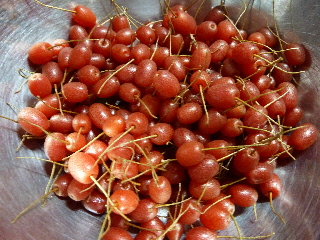
グミでジャムを作るんですね。
酸味が効いた美味しいジャムになるそうです。
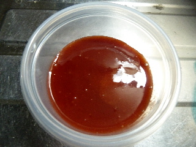
実際に出来上がったジャムはこんな感じです。
グミの種って大きいですね。種を取って煮詰めたらチョビットしか出来ませんでした。
お味ですが、グミ独特の渋みがありますね。
あと、酸味が効き過ぎかも？
砂糖でとっても甘くはなっているんですが、グミ味も濃縮されていますね。
ちょっとしか出来なくて良かったかも？
どうやって食べると美味しいんだろう？
色々試してみようと思います。
【グミTOP】 【果物TOP】 【園芸TOP】
2013/06/02
グミが色づき始めました。
グミが熟れてきました。
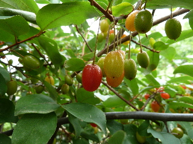
赤いのを試しに一つ食べてみました。
グミって渋いイメージがあってので食べなかったので、食べたのは久しぶりです。
想像していたよりも渋くなかったです。
沢山は嫌だけど、ちょっとならいいかなって思いました。
何か調理して、美味しく食べれる方法があるといいな。
【グミTOP】 【果物TOP】 【園芸TOP】
2013/04/13
グミの花って変わった形ですね。
食べないので関心がなかったですが、グミの花が沢山咲いていました。
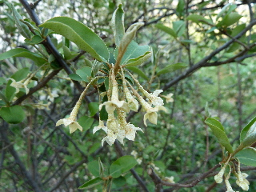
ちょっと変わった格好ですよね。
もっと美味しければ食べるんだけどなー。
今ねっとで調べたら、茱萸はビタミンEが沢山含まれていて、体にいいそうです。
今年は何かに活用したいです。
【グミTOP】
【果物TOP】
【園芸TOP】
畑仕事じゃないよ。
【おいしいものを食べよう。】【しっかり寝よう。】
【ソロ活をしよう!】【季節感のあることをしよう。】【動画視聴はほどほどに。】【当サイトの全てのコンテンツは無断転載禁止です。】